Normale Battle Dolls (一般戰鬥娃娃)
Die offizielle Reward-Liste aller regulären Battle Dolls — komplettes Line-up der täglichen Puppen-Rewards bei NPC Rex in Prontera.
🎎 Was sind Normal Battle Dolls?
Normale Battle Dolls droppen von regulären Monstern in ganz Midgard — sie sind leichter zu erhalten als die MVP-Varianten, bieten aber dennoch solide Daily-Rewards. Hauptseite: Battle-Doll-System. MVP-Gegenstück: MVP Battle Dolls.
prontera 260 268).
📦 Reward-Liste (30 Normal Dolls)
Alle aktuell verfügbaren Normal Battle Dolls mit ihren offiziellen Reward-Tabellen.
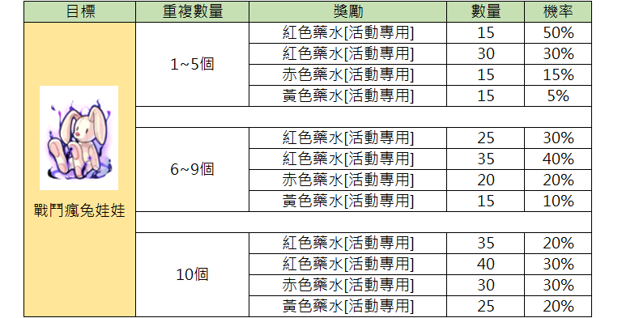
Diese Tabelle zeigt die Belohnungen und die zugehörigen Gewinnchancen, basierend auf der Anzahl der abgegebenen 'Battle Crazy Rabbit Doll' Gegenstände.
| Ziel | Anzahl der Wiederholungen | Belohnung | Menge | Chance |
|---|---|---|---|---|
| Battle Crazy Rabbit Doll | 1~5 | Red Potion [Event] | 15 | 50% |
| Battle Crazy Rabbit Doll | 1~5 | Red Potion [Event] | 30 | 30% |
| Battle Crazy Rabbit Doll | 1~5 | Red Potion [Event] | 15 | 15% |
| Battle Crazy Rabbit Doll | 1~5 | Yellow Potion [Event] | 15 | 5% |
| Battle Crazy Rabbit Doll | 6~9 | Red Potion [Event] | 25 | 30% |
| Battle Crazy Rabbit Doll | 6~9 | Red Potion [Event] | 35 | 40% |
| Battle Crazy Rabbit Doll | 6~9 | Red Potion [Event] | 20 | 20% |
| Battle Crazy Rabbit Doll | 6~9 | Yellow Potion [Event] | 15 | 10% |
| Battle Crazy Rabbit Doll | 10 | Red Potion [Event] | 35 | 20% |
| Battle Crazy Rabbit Doll | 10 | Red Potion [Event] | 40 | 30% |
| Battle Crazy Rabbit Doll | 10 | Red Potion [Event] | 30 | 30% |
| Battle Crazy Rabbit Doll | 10 | Yellow Potion [Event] | 25 | 20% |
Die Tabelle illustriert die Belohnungsstaffelung für das Event-Item 'Battle Crazy Rabbit Doll'.
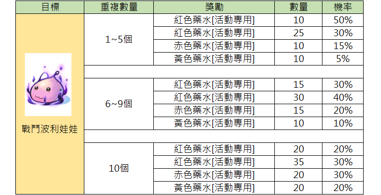
Diese Tabelle zeigt die Belohnungen und Wahrscheinlichkeiten für das Einlösen der 'Battle Poring Doll' in Abhängigkeit von der Menge.
| Ziel | Menge | Belohnung | Anzahl | Wahrscheinlichkeit |
|---|---|---|---|---|
| Battle Poring Doll | 1~5 | Red Potion [Event] | 10 | 50% |
| Battle Poring Doll | 1~5 | Red Potion [Event] | 25 | 30% |
| Battle Poring Doll | 1~5 | Red Potion [Event] | 10 | 15% |
| Battle Poring Doll | 1~5 | Yellow Potion [Event] | 10 | 5% |
| Battle Poring Doll | 6~9 | Red Potion [Event] | 15 | 30% |
| Battle Poring Doll | 6~9 | Red Potion [Event] | 30 | 40% |
| Battle Poring Doll | 6~9 | Red Potion [Event] | 15 | 20% |
| Battle Poring Doll | 6~9 | Yellow Potion [Event] | 10 | 10% |
| Battle Poring Doll | 10 | Red Potion [Event] | 20 | 20% |
| Battle Poring Doll | 10 | Red Potion [Event] | 35 | 30% |
| Battle Poring Doll | 10 | Red Potion [Event] | 20 | 30% |
| Battle Poring Doll | 10 | Yellow Potion [Event] | 20 | 20% |
Die im Spiel als '紅色藥水' und '赤色藥水' gelisteten Items wurden konsistent als Red Potion übersetzt.
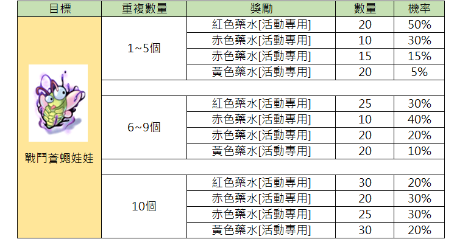
Diese Tabelle zeigt die Belohnungschancen für das Item 'Kampf-Fliegen-Puppe', abhängig von der gesammelten Menge.
| Ziel | Wiederholungsanzahl | Belohnung | Anzahl | Wahrscheinlichkeit |
|---|---|---|---|---|
| Battle Fly Doll | 1~5 | Red Potion [Event] | 20 | 50% |
| Battle Fly Doll | 1~5 | Red Potion [Event] | 10 | 30% |
| Battle Fly Doll | 1~5 | Red Potion [Event] | 15 | 15% |
| Battle Fly Doll | 1~5 | Yellow Potion [Event] | 20 | 5% |
| Battle Fly Doll | 6~9 | Red Potion [Event] | 25 | 30% |
| Battle Fly Doll | 6~9 | Red Potion [Event] | 10 | 40% |
| Battle Fly Doll | 6~9 | Red Potion [Event] | 20 | 20% |
| Battle Fly Doll | 6~9 | Yellow Potion [Event] | 20 | 10% |
| Battle Fly Doll | 10 | Red Potion [Event] | 30 | 20% |
| Battle Fly Doll | 10 | Red Potion [Event] | 20 | 30% |
| Battle Fly Doll | 10 | Red Potion [Event] | 25 | 30% |
| Battle Fly Doll | 10 | Yellow Potion [Event] | 30 | 20% |
Alle Tränke sind spezifisch als [Event] markiert und können nicht mit normalen Tränken getauscht werden.
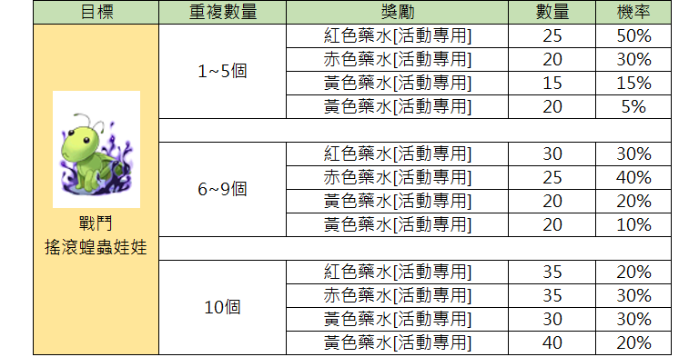
Diese Tabelle zeigt die Belohnungen und Gewinnwahrscheinlichkeiten für das Besiegen des 'Rocker Doll' Gegners, unterteilt nach der Anzahl der Wiederholungen.
| Ziel | Anzahl der Wiederholungen | Belohnung | Menge | Wahrscheinlichkeit |
|---|---|---|---|---|
| Rocker Doll | 1~5 | Red Potion [Event] | 25 | 50% |
| Rocker Doll | 1~5 | Red Potion [Event] | 20 | 30% |
| Rocker Doll | 1~5 | Yellow Potion [Event] | 15 | 15% |
| Rocker Doll | 1~5 | Yellow Potion [Event] | 20 | 5% |
| Rocker Doll | 6~9 | Red Potion [Event] | 30 | 30% |
| Rocker Doll | 6~9 | Red Potion [Event] | 25 | 40% |
| Rocker Doll | 6~9 | Yellow Potion [Event] | 20 | 20% |
| Rocker Doll | 6~9 | Yellow Potion [Event] | 20 | 10% |
| Rocker Doll | 10 | Red Potion [Event] | 35 | 20% |
| Rocker Doll | 10 | Red Potion [Event] | 35 | 30% |
| Rocker Doll | 10 | Yellow Potion [Event] | 30 | 30% |
| Rocker Doll | 10 | Yellow Potion [Event] | 40 | 20% |
Die Belohnungen beziehen sich auf die Anzahl der erfolgreich abgeschlossenen Kämpfe gegen das 'Rocker Doll' Monster. 'Event' Tränke sind spezifisch für diese Aktivität.
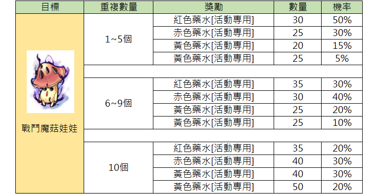
Diese Tabelle zeigt die Belohnungen, die basierend auf der Anzahl der gesammelten Battle Mushroom Dolls (戰鬥魔菇娃娃) vergeben werden, inklusive der jeweiligen Mengen und Gewinnwahrscheinlichkeiten.
| Ziel | Anzahl gesammelt | Belohnung | Menge | Wahrscheinlichkeit |
|---|---|---|---|---|
| Battle Mushroom Doll | 1~5 | Red Potion [Event] | 30 | 50% |
| Battle Mushroom Doll | 1~5 | Red Potion [Event] | 25 | 30% |
| Battle Mushroom Doll | 1~5 | Yellow Potion [Event] | 20 | 15% |
| Battle Mushroom Doll | 1~5 | Yellow Potion [Event] | 25 | 5% |
| Battle Mushroom Doll | 6~9 | Red Potion [Event] | 35 | 30% |
| Battle Mushroom Doll | 6~9 | Red Potion [Event] | 30 | 40% |
| Battle Mushroom Doll | 6~9 | Yellow Potion [Event] | 25 | 20% |
| Battle Mushroom Doll | 6~9 | Yellow Potion [Event] | 25 | 10% |
| Battle Mushroom Doll | 10 | Red Potion [Event] | 35 | 20% |
| Battle Mushroom Doll | 10 | Red Potion [Event] | 40 | 30% |
| Battle Mushroom Doll | 10 | Yellow Potion [Event] | 40 | 30% |
| Battle Mushroom Doll | 10 | Yellow Potion [Event] | 50 | 20% |
Die Belohnungen beziehen sich auf Event-Versionen der Tränke (Red Potion [Event] / Yellow Potion [Event]), die speziell für diese Aktion gelten.
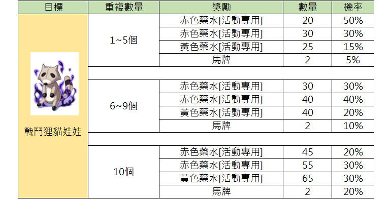
Diese Tabelle zeigt die Belohnungen und Wahrscheinlichkeiten für die Abgabe von Battle Raccoon Dolls, basierend auf der Menge der eingereichten Gegenstände.
| Ziel | Wiederholungsanzahl | Belohnung | Menge | Wahrscheinlichkeit |
|---|---|---|---|---|
| Battle Raccoon Doll | 1~5 Stück | Red Potion [Event] | 20 | 50% |
| Battle Raccoon Doll | 1~5 Stück | Red Potion [Event] | 30 | 30% |
| Battle Raccoon Doll | 1~5 Stück | Yellow Potion [Event] | 25 | 15% |
| Battle Raccoon Doll | 1~5 Stück | Worm Peel | 2 | 5% |
| Battle Raccoon Doll | 6~9 Stück | Red Potion [Event] | 30 | 30% |
| Battle Raccoon Doll | 6~9 Stück | Red Potion [Event] | 40 | 40% |
| Battle Raccoon Doll | 6~9 Stück | Yellow Potion [Event] | 40 | 20% |
| Battle Raccoon Doll | 6~9 Stück | Worm Peel | 2 | 10% |
| Battle Raccoon Doll | 10 Stück | Red Potion [Event] | 45 | 20% |
| Battle Raccoon Doll | 10 Stück | Red Potion [Event] | 55 | 30% |
| Battle Raccoon Doll | 10 Stück | Yellow Potion [Event] | 65 | 30% |
| Battle Raccoon Doll | 10 Stück | Worm Peel | 2 | 20% |
Die Spalte 'Ziel' bezieht sich auf den Gegenstand Battle Raccoon Doll (戰鬥狸貓娃娃). 'Worm Peel' wird als Übersetzung für 馬牌 verwendet.
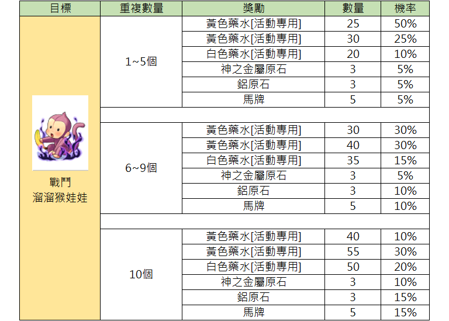
Diese Tabelle zeigt die Belohnungen und deren Wahrscheinlichkeiten basierend auf der Anzahl der gesammelten Gegenstände nach dem Besiegen der Yoyo-Puppen.
| Ziel | Anzahl der Wiederholungen | Belohnung | Menge | Wahrscheinlichkeit |
|---|---|---|---|---|
| Combat Yoyo Doll | 1~5 | Yellow Potion [Event] | 25 | 50% |
| Combat Yoyo Doll | 1~5 | Yellow Potion [Event] | 30 | 25% |
| Combat Yoyo Doll | 1~5 | White Potion [Event] | 20 | 10% |
| Combat Yoyo Doll | 1~5 | Rough Oridecon | 3 | 5% |
| Combat Yoyo Doll | 1~5 | Rough Elunium | 3 | 5% |
| Combat Yoyo Doll | 1~5 | Horse Token | 5 | 5% |
| Combat Yoyo Doll | 6~9 | Yellow Potion [Event] | 30 | 30% |
| Combat Yoyo Doll | 6~9 | Yellow Potion [Event] | 40 | 30% |
| Combat Yoyo Doll | 6~9 | White Potion [Event] | 35 | 15% |
| Combat Yoyo Doll | 6~9 | Rough Oridecon | 3 | 5% |
| Combat Yoyo Doll | 6~9 | Rough Elunium | 3 | 10% |
| Combat Yoyo Doll | 6~9 | Horse Token | 5 | 10% |
| Combat Yoyo Doll | 10 | Yellow Potion [Event] | 40 | 10% |
| Combat Yoyo Doll | 10 | Yellow Potion [Event] | 55 | 30% |
| Combat Yoyo Doll | 10 | White Potion [Event] | 50 | 20% |
| Combat Yoyo Doll | 10 | Rough Oridecon | 3 | 10% |
| Combat Yoyo Doll | 10 | Rough Elunium | 3 | 15% |
| Combat Yoyo Doll | 10 | Horse Token | 5 | 15% |
Die Liste zeigt Event-spezifische Heiltränke sowie Upgrade-Materialien als Belohnungen.
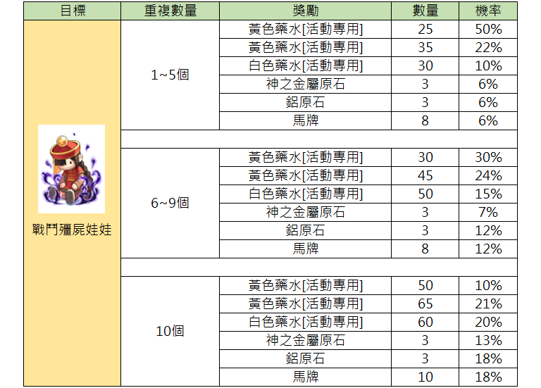
Diese Tabelle zeigt die Belohnungen und Wahrscheinlichkeiten für die Kampf-Jiangshi-Puppe basierend auf der Anzahl der abgegebenen Gegenstände.
| Ziel | Anzahl der Wiederholungen | Belohnung | Menge | Wahrscheinlichkeit |
|---|---|---|---|---|
| Battle Jiangshi Doll | 1~5 | Yellow Potion [Event] | 25 | 50% |
| Battle Jiangshi Doll | 1~5 | Yellow Potion [Event] | 35 | 22% |
| Battle Jiangshi Doll | 1~5 | White Potion [Event] | 30 | 10% |
| Battle Jiangshi Doll | 1~5 | Rough Oridecon | 3 | 6% |
| Battle Jiangshi Doll | 1~5 | Rough Elunium | 3 | 6% |
| Battle Jiangshi Doll | 1~5 | Horse Token | 8 | 6% |
| Battle Jiangshi Doll | 6~9 | Yellow Potion [Event] | 30 | 30% |
| Battle Jiangshi Doll | 6~9 | Yellow Potion [Event] | 45 | 24% |
| Battle Jiangshi Doll | 6~9 | White Potion [Event] | 50 | 15% |
| Battle Jiangshi Doll | 6~9 | Rough Oridecon | 3 | 7% |
| Battle Jiangshi Doll | 6~9 | Rough Elunium | 3 | 12% |
| Battle Jiangshi Doll | 6~9 | Horse Token | 8 | 12% |
| Battle Jiangshi Doll | 10 | Yellow Potion [Event] | 50 | 10% |
| Battle Jiangshi Doll | 10 | Yellow Potion [Event] | 65 | 21% |
| Battle Jiangshi Doll | 10 | White Potion [Event] | 60 | 20% |
| Battle Jiangshi Doll | 10 | Rough Oridecon | 3 | 13% |
| Battle Jiangshi Doll | 10 | Rough Elunium | 3 | 18% |
| Battle Jiangshi Doll | 10 | Horse Token | 10 | 18% |
Die Belohnungen variieren je nachdem, wie oft die Battle Jiangshi Doll abgegeben oder eingetauscht wurde.
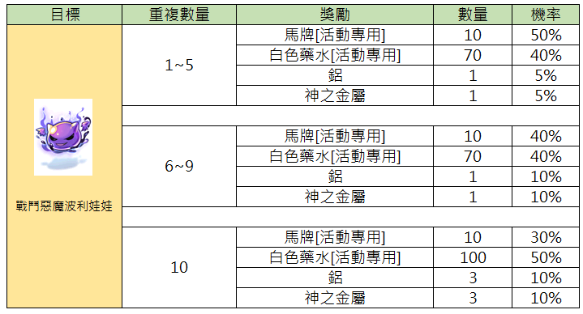
Diese Tabelle zeigt die Belohnungen für die 'Kampf-Deviruchi-Puppe', abhängig von der Anzahl der Wiederholungen.
| Ziel | Wiederholungen | Belohnung | Anzahl | Wahrscheinlichkeit |
|---|---|---|---|---|
| Kampf-Deviruchi-Puppe | 1~5 | Horse Token [Event] | 10 | 50% |
| Kampf-Deviruchi-Puppe | 1~5 | White Potion [Event] | 70 | 40% |
| Kampf-Deviruchi-Puppe | 1~5 | Aluminum | 1 | 5% |
| Kampf-Deviruchi-Puppe | 1~5 | Oridecon | 1 | 5% |
| Kampf-Deviruchi-Puppe | 6~9 | Horse Token [Event] | 10 | 40% |
| Kampf-Deviruchi-Puppe | 6~9 | White Potion [Event] | 70 | 40% |
| Kampf-Deviruchi-Puppe | 6~9 | Aluminum | 1 | 10% |
| Kampf-Deviruchi-Puppe | 6~9 | Oridecon | 1 | 10% |
| Kampf-Deviruchi-Puppe | 10 | Horse Token [Event] | 10 | 30% |
| Kampf-Deviruchi-Puppe | 10 | White Potion [Event] | 100 | 50% |
| Kampf-Deviruchi-Puppe | 10 | Aluminum | 3 | 10% |
| Kampf-Deviruchi-Puppe | 10 | Oridecon | 3 | 10% |
Die Spalte 'Ziel' bezieht sich auf den Gegenstand 'Kampf-Deviruchi-Puppe'.
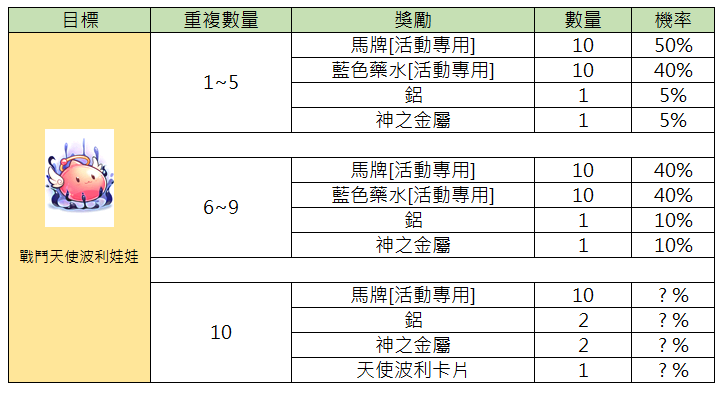
Diese Tabelle zeigt die Belohnungen und deren Wahrscheinlichkeiten basierend auf der Anzahl der Wiederholungen für den Gegenstand Battle Angel Poring Doll.
| Ziel | Wiederholungen | Belohnung | Anzahl | Wahrscheinlichkeit |
|---|---|---|---|---|
| Battle Angel Poring Doll | 1~5 | Horse Token [Event] | 10 | 50% |
| Battle Angel Poring Doll | 1~5 | Blue Potion [Event] | 10 | 40% |
| Battle Angel Poring Doll | 1~5 | Elunium | 1 | 5% |
| Battle Angel Poring Doll | 1~5 | Oridecon | 1 | 5% |
| Battle Angel Poring Doll | 6~9 | Horse Token [Event] | 10 | 40% |
| Battle Angel Poring Doll | 6~9 | Blue Potion [Event] | 10 | 40% |
| Battle Angel Poring Doll | 6~9 | Elunium | 1 | 10% |
| Battle Angel Poring Doll | 6~9 | Oridecon | 1 | 10% |
| Battle Angel Poring Doll | 10 | Horse Token [Event] | 10 | ?% |
| Battle Angel Poring Doll | 10 | Elunium | 2 | ?% |
| Battle Angel Poring Doll | 10 | Oridecon | 2 | ?% |
| Battle Angel Poring Doll | 10 | Angel Poring Card | 1 | ?% |
Die mit '?%' markierten Werte sind im Spiel derzeit nicht spezifiziert.
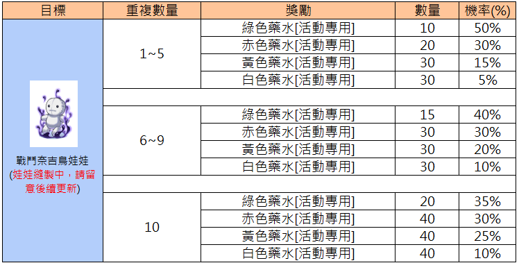
Diese Tabelle zeigt die Belohnungen und Wahrscheinlichkeiten basierend auf der Anzahl der Wiederholungen der Quest 'Kampf-Najasu-Puppe'.
| Ziel | Wiederholungen | Belohnung | Menge | Wahrscheinlichkeit (%) |
|---|---|---|---|---|
| Battle Najasu Doll | 1~5 | Green Potion [Event] | 10 | 50% |
| Battle Najasu Doll | 1~5 | Red Potion [Event] | 20 | 30% |
| Battle Najasu Doll | 1~5 | Yellow Potion [Event] | 30 | 15% |
| Battle Najasu Doll | 1~5 | White Potion [Event] | 30 | 5% |
| Battle Najasu Doll | 6~9 | Green Potion [Event] | 15 | 40% |
| Battle Najasu Doll | 6~9 | Red Potion [Event] | 30 | 30% |
| Battle Najasu Doll | 6~9 | Yellow Potion [Event] | 30 | 20% |
| Battle Najasu Doll | 6~9 | White Potion [Event] | 30 | 10% |
| Battle Najasu Doll | 10 | Green Potion [Event] | 20 | 35% |
| Battle Najasu Doll | 10 | Red Potion [Event] | 40 | 30% |
| Battle Najasu Doll | 10 | Yellow Potion [Event] | 40 | 25% |
| Battle Najasu Doll | 10 | White Potion [Event] | 40 | 10% |
Die Notiz unter der 'Battle Najasu Doll' weist darauf hin, dass die Puppe noch genäht wird und man auf zukünftige Updates achten soll.
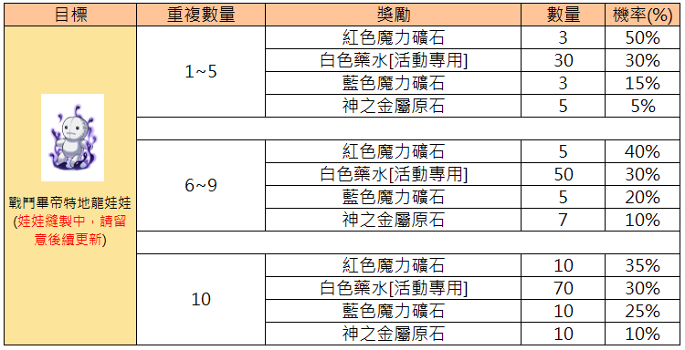
Diese Tabelle zeigt die gestaffelten Belohnungen basierend auf der Anzahl der gesammelten 'Battle Petite Doll'-Gegenstände an.
| Ziel | Anzahl der Wiederholungen | Belohnung | Anzahl | Wahrscheinlichkeit (%) |
|---|---|---|---|---|
| Battle Petite Doll (Puppenherstellung läuft, bitte auf Updates achten) | 1~5 | Red Magic Stone | 3 | 50% |
| Battle Petite Doll (Puppenherstellung läuft, bitte auf Updates achten) | 1~5 | White Potion [Event] | 30 | 30% |
| Battle Petite Doll (Puppenherstellung läuft, bitte auf Updates achten) | 1~5 | Blue Magic Stone | 3 | 15% |
| Battle Petite Doll (Puppenherstellung läuft, bitte auf Updates achten) | 1~5 | Rough Oridecon | 5 | 5% |
| Battle Petite Doll (Puppenherstellung läuft, bitte auf Updates achten) | 6~9 | Red Magic Stone | 5 | 40% |
| Battle Petite Doll (Puppenherstellung läuft, bitte auf Updates achten) | 6~9 | White Potion [Event] | 50 | 30% |
| Battle Petite Doll (Puppenherstellung läuft, bitte auf Updates achten) | 6~9 | Blue Magic Stone | 5 | 20% |
| Battle Petite Doll (Puppenherstellung läuft, bitte auf Updates achten) | 6~9 | Rough Oridecon | 7 | 10% |
| Battle Petite Doll (Puppenherstellung läuft, bitte auf Updates achten) | 10 | Red Magic Stone | 10 | 35% |
| Battle Petite Doll (Puppenherstellung läuft, bitte auf Updates achten) | 10 | White Potion [Event] | 70 | 30% |
| Battle Petite Doll (Puppenherstellung läuft, bitte auf Updates achten) | 10 | Blue Magic Stone | 10 | 25% |
| Battle Petite Doll (Puppenherstellung läuft, bitte auf Updates achten) | 10 | Rough Oridecon | 10 | 10% |
Die Spalte 'Ziel' bezieht sich auf die 'Battle Petite Doll'. Der Hinweis in Klammern weist darauf hin, dass die Puppen aktuell noch verarbeitet werden und weitere Updates folgen.
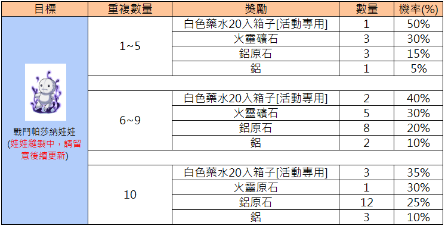
Diese Tabelle zeigt die Belohnungen und Gewinnchancen basierend auf der Anzahl der gesammelten Kampf-Pasana-Puppen.
| Ziel | Wiederholungsanzahl | Belohnung | Anzahl | Chance (%) |
|---|---|---|---|---|
| Kampf-Pasana-Puppe (Puppe wird genäht, bitte auf Updates achten) | 1~5 | White Potion Box 20ea [Event] | 1 | 50% |
| Kampf-Pasana-Puppe (Puppe wird genäht, bitte auf Updates achten) | 1~5 | Fire Stone | 3 | 30% |
| Kampf-Pasana-Puppe (Puppe wird genäht, bitte auf Updates achten) | 1~5 | Rough Oridecon | 3 | 15% |
| Kampf-Pasana-Puppe (Puppe wird genäht, bitte auf Updates achten) | 1~5 | Oridecon | 1 | 5% |
| Kampf-Pasana-Puppe (Puppe wird genäht, bitte auf Updates achten) | 6~9 | White Potion Box 20ea [Event] | 2 | 40% |
| Kampf-Pasana-Puppe (Puppe wird genäht, bitte auf Updates achten) | 6~9 | Fire Stone | 5 | 30% |
| Kampf-Pasana-Puppe (Puppe wird genäht, bitte auf Updates achten) | 6~9 | Rough Oridecon | 8 | 20% |
| Kampf-Pasana-Puppe (Puppe wird genäht, bitte auf Updates achten) | 6~9 | Oridecon | 2 | 10% |
| Kampf-Pasana-Puppe (Puppe wird genäht, bitte auf Updates achten) | 10 | White Potion Box 20ea [Event] | 3 | 35% |
| Kampf-Pasana-Puppe (Puppe wird genäht, bitte auf Updates achten) | 10 | Fire Stone | 1 | 30% |
| Kampf-Pasana-Puppe (Puppe wird genäht, bitte auf Updates achten) | 10 | Rough Oridecon | 12 | 25% |
| Kampf-Pasana-Puppe (Puppe wird genäht, bitte auf Updates achten) | 10 | Oridecon | 3 | 10% |
Das Ziel 'Kampf-Pasana-Puppe' enthält einen Hinweis, dass die Inhalte derzeit noch in Bearbeitung sind.
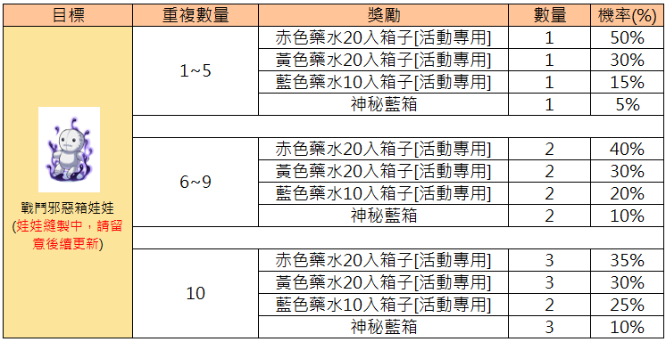
Diese Tabelle zeigt die Belohnungen und die zugehörigen Gewinnwahrscheinlichkeiten basierend auf der Anzahl der Wiederholungen bei der Kampf-Voodoo-Puppe.
| Ziel | Wiederholungen | Belohnung | Menge | Wahrscheinlichkeit (%) |
|---|---|---|---|---|
| Kampf-Voodoo-Puppe | 1~5 | Red Potion Box 20 [Event] | 1 | 50% |
| Kampf-Voodoo-Puppe | 1~5 | Yellow Potion Box 20 [Event] | 1 | 30% |
| Kampf-Voodoo-Puppe | 1~5 | Blue Potion Box 10 [Event] | 1 | 15% |
| Kampf-Voodoo-Puppe | 1~5 | Mysterious Blue Box | 1 | 5% |
| Kampf-Voodoo-Puppe | 6~9 | Red Potion Box 20 [Event] | 2 | 40% |
| Kampf-Voodoo-Puppe | 6~9 | Yellow Potion Box 20 [Event] | 2 | 30% |
| Kampf-Voodoo-Puppe | 6~9 | Blue Potion Box 10 [Event] | 2 | 20% |
| Kampf-Voodoo-Puppe | 6~9 | Mysterious Blue Box | 2 | 10% |
| Kampf-Voodoo-Puppe | 10 | Red Potion Box 20 [Event] | 3 | 35% |
| Kampf-Voodoo-Puppe | 10 | Yellow Potion Box 20 [Event] | 3 | 30% |
| Kampf-Voodoo-Puppe | 10 | Blue Potion Box 10 [Event] | 2 | 25% |
| Kampf-Voodoo-Puppe | 10 | Mysterious Blue Box | 3 | 10% |
Der Text unter der Puppe besagt: 'Kampf-Voodoo-Puppe (Die Puppe wird derzeit genäht, bitte achten Sie auf zukünftige Updates)'.
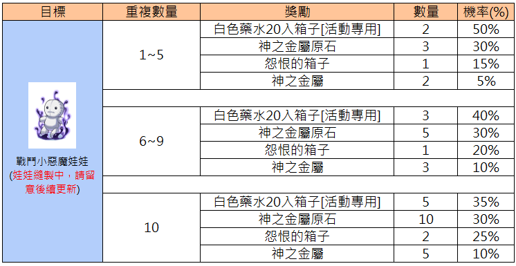
Diese Tabelle zeigt die Drop-Wahrscheinlichkeiten für die Belohnungen der Kampfteufel-Puppe basierend auf der Anzahl der Wiederholungen.
| Ziel | Wiederholungen | Belohnung | Anzahl | Wahrscheinlichkeit (%) |
|---|---|---|---|---|
| Battle Imp Doll | 1~5 | White Potion Box 20 [Event] | 2 | 50% |
| Battle Imp Doll | 1~5 | Rough Oridecon | 3 | 30% |
| Battle Imp Doll | 1~5 | Grudge Box | 1 | 15% |
| Battle Imp Doll | 1~5 | Oridecon | 2 | 5% |
| Battle Imp Doll | 6~9 | White Potion Box 20 [Event] | 3 | 40% |
| Battle Imp Doll | 6~9 | Rough Oridecon | 5 | 30% |
| Battle Imp Doll | 6~9 | Grudge Box | 1 | 20% |
| Battle Imp Doll | 6~9 | Oridecon | 3 | 10% |
| Battle Imp Doll | 10 | White Potion Box 20 [Event] | 5 | 35% |
| Battle Imp Doll | 10 | Rough Oridecon | 10 | 30% |
| Battle Imp Doll | 10 | Grudge Box | 2 | 25% |
| Battle Imp Doll | 10 | Oridecon | 5 | 10% |
Der Hinweis unter dem Bild besagt, dass die Battle Imp Doll derzeit bearbeitet wird und auf zukünftige Updates geachtet werden soll.
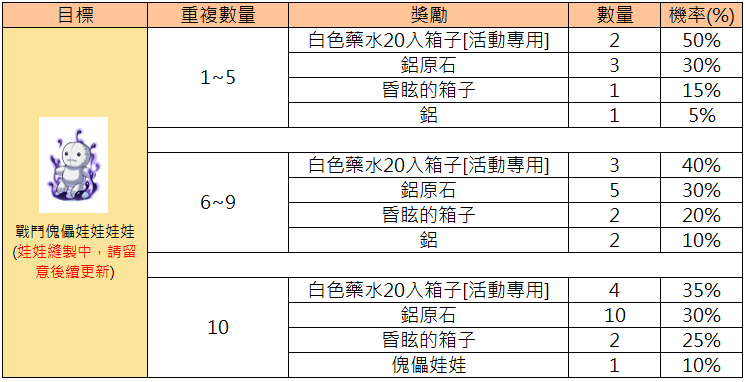
Diese Tabelle zeigt die Belohnungen für das Sammeln von Battle Voodoo Dolls basierend auf der Anzahl der abgegebenen Gegenstände.
| Ziel | Wiederholungen | Belohnung | Anzahl | Wahrscheinlichkeit (%) |
|---|---|---|---|---|
| Battle Voodoo Doll | 1~5 | White Potion Box 20 [Event] | 2 | 50% |
| Rough Elunium | 3 | 30% | ||
| Dizzy Box | 1 | 15% | ||
| Elunium | 1 | 5% | ||
| Battle Voodoo Doll | 6~9 | White Potion Box 20 [Event] | 3 | 40% |
| Rough Elunium | 5 | 30% | ||
| Dizzy Box | 2 | 20% | ||
| Elunium | 2 | 10% | ||
| Battle Voodoo Doll | 10 | White Potion Box 20 [Event] | 4 | 35% |
| Rough Elunium | 10 | 30% | ||
| Dizzy Box | 2 | 25% | ||
| Voodoo Doll | 1 | 10% |
Der Hinweis unter der Battle Voodoo Doll lautet: 'Voodoo Doll in Herstellung, bitte auf zukünftige Updates achten'.
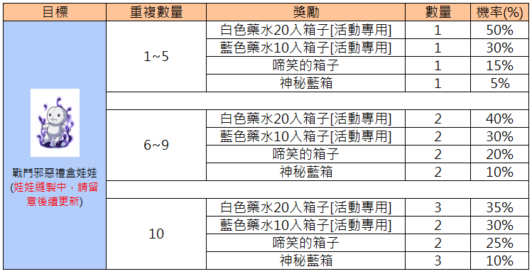
Diese Tabelle zeigt die Belohnungen und Wahrscheinlichkeiten für die Battle Evil Gift Box Doll basierend auf der Anzahl der Wiederholungen.
| Ziel | Wiederholungsanzahl | Belohnung | Menge | Wahrscheinlichkeit (%) |
|---|---|---|---|---|
| Battle Evil Gift Box Doll (Doll in Herstellung, bitte auf zukünftige Updates achten) | 1~5 | White Potion Box 20ea [Event] | 1 | 50% |
| 1~5 | Blue Potion Box 10ea [Event] | 1 | 30% | |
| 1~5 | Box of Resentment | 1 | 15% | |
| 1~5 | Mysterious Blue Box | 1 | 5% | |
| Battle Evil Gift Box Doll (Doll in Herstellung, bitte auf zukünftige Updates achten) | 6~9 | White Potion Box 20ea [Event] | 2 | 40% |
| 6~9 | Blue Potion Box 10ea [Event] | 2 | 30% | |
| 6~9 | Box of Resentment | 2 | 20% | |
| 6~9 | Mysterious Blue Box | 2 | 10% | |
| Battle Evil Gift Box Doll (Doll in Herstellung, bitte auf zukünftige Updates achten) | 10 | White Potion Box 20ea [Event] | 3 | 35% |
| 10 | Blue Potion Box 10ea [Event] | 2 | 30% | |
| 10 | Box of Resentment | 2 | 25% | |
| 10 | Mysterious Blue Box | 3 | 10% |
Die 'Battle Evil Gift Box Doll' befindet sich derzeit in der Entwicklung, daher wird auf zukünftige Spielupdates verwiesen.
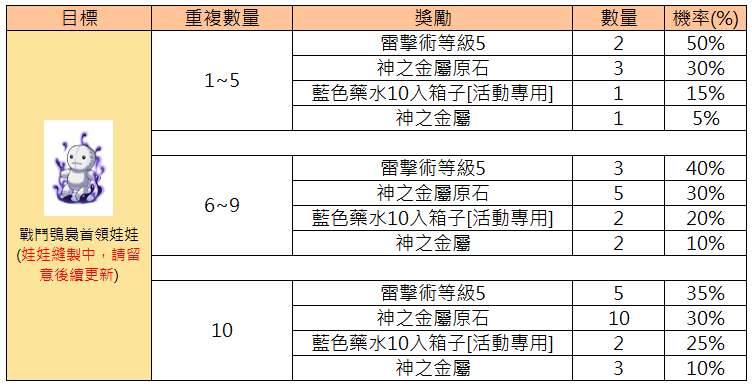
Diese Tabelle zeigt die Belohnungen und Gewinnwahrscheinlichkeiten in Abhängigkeit von der Anzahl der gesammelten Battle Puppet-Items.
| Ziel | Wiederholungsanzahl | Belohnung | Menge | Wahrscheinlichkeit(%) |
|---|---|---|---|---|
| Battle Puppet (Puppen in Herstellung, bitte auf Updates achten) | 1~5 | Lightning Bolt Lv5 | 2 | 50% |
| Battle Puppet (Puppen in Herstellung, bitte auf Updates achten) | 1~5 | Oridecon Rough | 3 | 30% |
| Battle Puppet (Puppen in Herstellung, bitte auf Updates achten) | 1~5 | Blue Potion Box (Event) | 1 | 15% |
| Battle Puppet (Puppen in Herstellung, bitte auf Updates achten) | 1~5 | Oridecon | 1 | 5% |
| Battle Puppet (Puppen in Herstellung, bitte auf Updates achten) | 6~9 | Lightning Bolt Lv5 | 3 | 40% |
| Battle Puppet (Puppen in Herstellung, bitte auf Updates achten) | 6~9 | Oridecon Rough | 5 | 30% |
| Battle Puppet (Puppen in Herstellung, bitte auf Updates achten) | 6~9 | Blue Potion Box (Event) | 2 | 20% |
| Battle Puppet (Puppen in Herstellung, bitte auf Updates achten) | 6~9 | Oridecon | 2 | 10% |
| Battle Puppet (Puppen in Herstellung, bitte auf Updates achten) | 10 | Lightning Bolt Lv5 | 5 | 35% |
| Battle Puppet (Puppen in Herstellung, bitte auf Updates achten) | 10 | Oridecon Rough | 10 | 30% |
| Battle Puppet (Puppen in Herstellung, bitte auf Updates achten) | 10 | Blue Potion Box (Event) | 2 | 25% |
| Battle Puppet (Puppen in Herstellung, bitte auf Updates achten) | 10 | Oridecon | 3 | 10% |
Die Tabelle illustriert die Belohnungsmechanik für das 'Battle Puppet'-Event. Beachten Sie, dass sich die Details laut dem Hinweis im Bild noch ändern können.
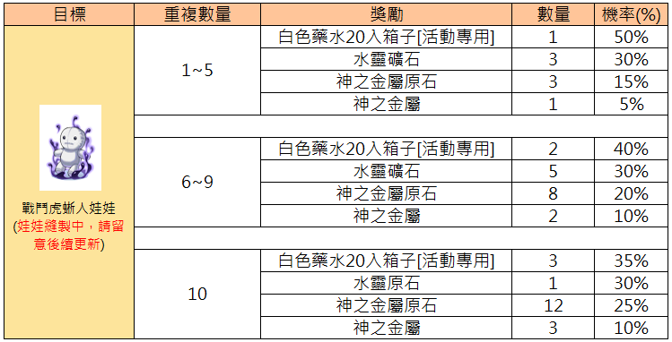
Diese Tabelle zeigt die Belohnungen und Gewinnchancen für das Sammeln von Battle Voodoo Dolls, basierend auf der Anzahl der gesammelten Items.
| Ziel | Wiederholungsanzahl | Belohnung | Anzahl | Chance (%) |
|---|---|---|---|---|
| Battle Voodoo Doll (Doll wird genäht, bitte auf zukünftige Updates achten) | 1~5 | White Potion Box 20 [Event] | 1 | 50% |
| 1~5 | Water Mineral | 3 | 30% | |
| 1~5 | Oridecon Ore | 3 | 15% | |
| 1~5 | Oridecon | 1 | 5% | |
| 6~9 | White Potion Box 20 [Event] | 2 | 40% | |
| 6~9 | Water Mineral | 5 | 30% | |
| 6~9 | Oridecon Ore | 8 | 20% | |
| 6~9 | Oridecon | 2 | 10% | |
| 10 | White Potion Box 20 [Event] | 3 | 35% | |
| 10 | Water Ore | 1 | 30% | |
| 10 | Oridecon Ore | 12 | 25% | |
| 10 | Oridecon | 3 | 10% |
Die Battle Voodoo Doll ist Teil eines laufenden Events, Details können sich ändern.
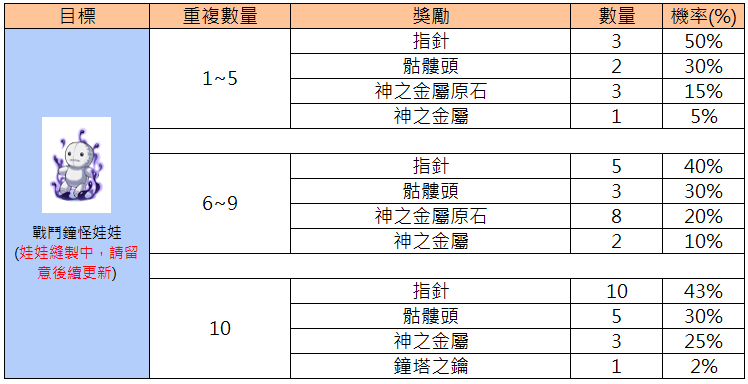
Diese Tabelle zeigt die Belohnungen und Gewinnwahrscheinlichkeiten für das Abschließen des Kampf-Uhrturmpuppen-Auftrags basierend auf der Anzahl der Wiederholungen.
| Ziel | Wiederholungen | Belohnung | Anzahl | Wahrscheinlichkeit (%) |
|---|---|---|---|---|
| Kampf-Uhrturmpuppe | 1~5 | Pointer | 3 | 50% |
| Kampf-Uhrturmpuppe | 1~5 | Unknown Headgear (Blob) | 2 | 30% |
| Kampf-Uhrturmpuppe | 1~5 | Rough Oridecon | 3 | 15% |
| Kampf-Uhrturmpuppe | 1~5 | Oridecon | 1 | 5% |
| Kampf-Uhrturmpuppe | 6~9 | Pointer | 5 | 40% |
| Kampf-Uhrturmpuppe | 6~9 | Unknown Headgear (Blob) | 3 | 30% |
| Kampf-Uhrturmpuppe | 6~9 | Rough Oridecon | 8 | 20% |
| Kampf-Uhrturmpuppe | 6~9 | Oridecon | 2 | 10% |
| Kampf-Uhrturmpuppe | 10 | Pointer | 10 | 43% |
| Kampf-Uhrturmpuppe | 10 | Unknown Headgear (Blob) | 5 | 30% |
| Kampf-Uhrturmpuppe | 10 | Oridecon | 3 | 25% |
| Kampf-Uhrturmpuppe | 10 | Clock Tower Key | 1 | 2% |
Der Text unter der Puppe lautet: 'Kampf-Uhrturmpuppe (Puppe wird derzeit genäht, bitte achten Sie auf spätere Aktualisierungen)'.
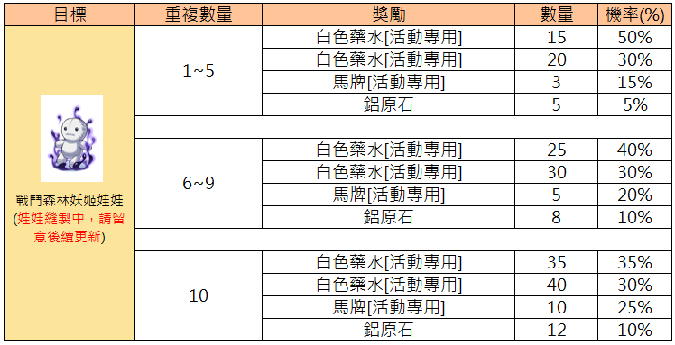
Diese Tabelle zeigt die Belohnungen und deren Wahrscheinlichkeiten basierend auf der Anzahl der Wiederholungen für die Waldfee-Puppe.
| Ziel | Wiederholungsanzahl | Belohnung | Menge | Wahrscheinlichkeit (%) |
|---|---|---|---|---|
| Waldfee-Puppe (Puppenherstellung läuft, bitte auf Updates achten) | 1~5 | White Potion [Event] | 15 | 50% |
| Waldfee-Puppe (Puppenherstellung läuft, bitte auf Updates achten) | 1~5 | White Potion [Event] | 20 | 30% |
| Waldfee-Puppe (Puppenherstellung läuft, bitte auf Updates achten) | 1~5 | Horse Token [Event] | 3 | 15% |
| Waldfee-Puppe (Puppenherstellung läuft, bitte auf Updates achten) | 1~5 | Aluminum | 5 | 5% |
| Waldfee-Puppe (Puppenherstellung läuft, bitte auf Updates achten) | 6~9 | White Potion [Event] | 25 | 40% |
| Waldfee-Puppe (Puppenherstellung läuft, bitte auf Updates achten) | 6~9 | White Potion [Event] | 30 | 30% |
| Waldfee-Puppe (Puppenherstellung läuft, bitte auf Updates achten) | 6~9 | Horse Token [Event] | 5 | 20% |
| Waldfee-Puppe (Puppenherstellung läuft, bitte auf Updates achten) | 6~9 | Aluminum | 8 | 10% |
| Waldfee-Puppe (Puppenherstellung läuft, bitte auf Updates achten) | 10 | White Potion [Event] | 35 | 35% |
| Waldfee-Puppe (Puppenherstellung läuft, bitte auf Updates achten) | 10 | White Potion [Event] | 40 | 30% |
| Waldfee-Puppe (Puppenherstellung läuft, bitte auf Updates achten) | 10 | Horse Token [Event] | 10 | 25% |
| Waldfee-Puppe (Puppenherstellung läuft, bitte auf Updates achten) | 10 | Aluminum | 12 | 10% |
Die Spalte 'Ziel' bezieht sich auf die Waldfee-Puppe. Der rote Text unter dem Bild weist darauf hin, dass die Puppenherstellung aktiv ist und man auf zukünftige Updates achten sollte.
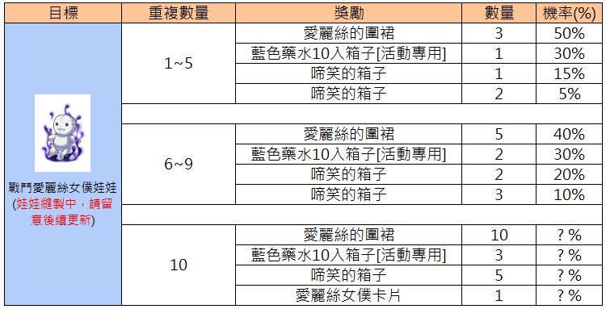
Diese Tabelle zeigt die Belohnungen und Gewinnchancen für das Sammeln von Kampf-Alice-Puppen, basierend auf der Anzahl der gesammelten Exemplare.
| Ziel | Anzahl der Wiederholungen | Belohnung | Menge | Wahrscheinlichkeit (%) |
|---|---|---|---|---|
| Kampf-Alice-Puppe (Puppe in Herstellung, bitte auf Updates achten) | 1~5 | Alice's Apron | 3 | 50% |
| Kampf-Alice-Puppe (Puppe in Herstellung, bitte auf Updates achten) | 1~5 | Blue Potion 10 Box [Event] | 1 | 30% |
| Kampf-Alice-Puppe (Puppe in Herstellung, bitte auf Updates achten) | 1~5 | Box of Resentment | 1 | 15% |
| Kampf-Alice-Puppe (Puppe in Herstellung, bitte auf Updates achten) | 1~5 | Box of Resentment | 2 | 5% |
| Kampf-Alice-Puppe (Puppe in Herstellung, bitte auf Updates achten) | 6~9 | Alice's Apron | 5 | 40% |
| Kampf-Alice-Puppe (Puppe in Herstellung, bitte auf Updates achten) | 6~9 | Blue Potion 10 Box [Event] | 2 | 30% |
| Kampf-Alice-Puppe (Puppe in Herstellung, bitte auf Updates achten) | 6~9 | Box of Resentment | 2 | 20% |
| Kampf-Alice-Puppe (Puppe in Herstellung, bitte auf Updates achten) | 6~9 | Box of Resentment | 3 | 10% |
| Kampf-Alice-Puppe (Puppe in Herstellung, bitte auf Updates achten) | 10 | Alice's Apron | 10 | ?% |
| Kampf-Alice-Puppe (Puppe in Herstellung, bitte auf Updates achten) | 10 | Blue Potion 10 Box [Event] | 3 | ?% |
| Kampf-Alice-Puppe (Puppe in Herstellung, bitte auf Updates achten) | 10 | Box of Resentment | 5 | ?% |
| Kampf-Alice-Puppe (Puppe in Herstellung, bitte auf Updates achten) | 10 | Alice Maid Card | 1 | ?% |
Die Werte für die 10. Stufe sind aktuell unbekannt und mit einem Fragezeichen markiert.
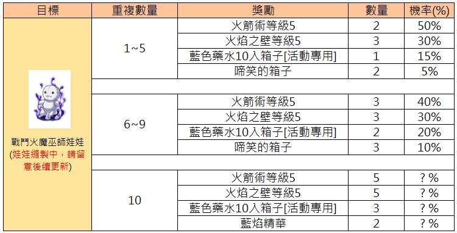
Diese Tabelle zeigt die Belohnungen und deren Wahrscheinlichkeiten basierend auf der Anzahl der Wiederholungen für das Kampf-Feuerhexen-Püppchen.
| Ziel | Wiederholungen | Belohnung | Anzahl | Wahrscheinlichkeit (%) |
|---|---|---|---|---|
| Kampf-Feuerhexen-Püppchen (Püppchen wird genäht, bitte auf Updates achten) | 1~5 | Fire Bolt Lv5 | 2 | 50% |
| Kampf-Feuerhexen-Püppchen (Püppchen wird genäht, bitte auf Updates achten) | 1~5 | Fire Wall Lv5 | 3 | 30% |
| Kampf-Feuerhexen-Püppchen (Püppchen wird genäht, bitte auf Updates achten) | 1~5 | Blue Potion Box (10pcs) [Event] | 1 | 15% |
| Kampf-Feuerhexen-Püppchen (Püppchen wird genäht, bitte auf Updates achten) | 1~5 | Chuckle Box | 2 | 5% |
| Kampf-Feuerhexen-Püppchen (Püppchen wird genäht, bitte auf Updates achten) | 6~9 | Fire Bolt Lv5 | 3 | 40% |
| Kampf-Feuerhexen-Püppchen (Püppchen wird genäht, bitte auf Updates achten) | 6~9 | Fire Wall Lv5 | 3 | 30% |
| Kampf-Feuerhexen-Püppchen (Püppchen wird genäht, bitte auf Updates achten) | 6~9 | Blue Potion Box (10pcs) [Event] | 2 | 20% |
| Kampf-Feuerhexen-Püppchen (Püppchen wird genäht, bitte auf Updates achten) | 6~9 | Chuckle Box | 3 | 10% |
| Kampf-Feuerhexen-Püppchen (Püppchen wird genäht, bitte auf Updates achten) | 10 | Fire Bolt Lv5 | 5 | ?% |
| Kampf-Feuerhexen-Püppchen (Püppchen wird genäht, bitte auf Updates achten) | 10 | Fire Wall Lv5 | 5 | ?% |
| Kampf-Feuerhexen-Püppchen (Püppchen wird genäht, bitte auf Updates achten) | 10 | Blue Potion Box (10pcs) [Event] | 3 | ?% |
| Kampf-Feuerhexen-Püppchen (Püppchen wird genäht, bitte auf Updates achten) | 10 | Blue Flame Essence | 2 | ?% |
Die mit '?%' markierten Felder geben an, dass die Wahrscheinlichkeiten für die 10. Wiederholung aktuell noch unbekannt oder nicht veröffentlicht sind.
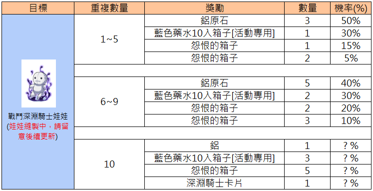
Diese Tabelle zeigt die Belohnungen für das Sammeln von Battle Abyss Knight Dolls, gestaffelt nach der Anzahl der gesammelten Puppen.
| Ziel | Anzahl gesammelt | Belohnung | Menge | Wahrscheinlichkeit (%) |
|---|---|---|---|---|
| Battle Abyss Knight Doll (Puppenherstellung läuft, bitte auf Updates achten) | 1~5 | Rough Oridecon | 3 | 50% |
| Battle Abyss Knight Doll (Puppenherstellung läuft, bitte auf Updates achten) | 1~5 | Blue Potion Box (Event) | 1 | 30% |
| Battle Abyss Knight Doll (Puppenherstellung läuft, bitte auf Updates achten) | 1~5 | Grudge Box | 1 | 15% |
| Battle Abyss Knight Doll (Puppenherstellung läuft, bitte auf Updates achten) | 1~5 | Grudge Box | 2 | 5% |
| Battle Abyss Knight Doll (Puppenherstellung läuft, bitte auf Updates achten) | 6~9 | Rough Oridecon | 5 | 40% |
| Battle Abyss Knight Doll (Puppenherstellung läuft, bitte auf Updates achten) | 6~9 | Blue Potion Box (Event) | 2 | 30% |
| Battle Abyss Knight Doll (Puppenherstellung läuft, bitte auf Updates achten) | 6~9 | Grudge Box | 2 | 20% |
| Battle Abyss Knight Doll (Puppenherstellung läuft, bitte auf Updates achten) | 6~9 | Grudge Box | 3 | 10% |
| Battle Abyss Knight Doll (Puppenherstellung läuft, bitte auf Updates achten) | 10 | Oridecon | 1 | ?% |
| Battle Abyss Knight Doll (Puppenherstellung läuft, bitte auf Updates achten) | 10 | Blue Potion Box (Event) | 3 | ?% |
| Battle Abyss Knight Doll (Puppenherstellung läuft, bitte auf Updates achten) | 10 | Grudge Box | 5 | ?% |
| Battle Abyss Knight Doll (Puppenherstellung läuft, bitte auf Updates achten) | 10 | Abyss Knight Card | 1 | ?% |
Die Spalte 'Ziel' enthält den Namen des Gegenstands und einen Hinweis auf den aktuellen Status der Puppenherstellung.
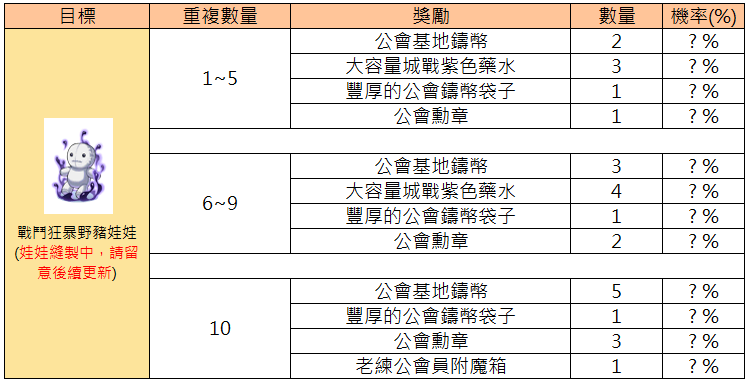
Diese Tabelle zeigt die Belohnungen für das Erreichen verschiedener Meilensteine bei der Anzahl der Wiederholungen, basierend auf dem 'Combat Orc Warrior Doll' Ziel.
| Ziel | Wiederholungen | Belohnung | Menge | Wahrscheinlichkeit (%) |
|---|---|---|---|---|
| Combat Orc Warrior Doll (Puppet crafting in progress, please watch for future updates) | 1~5 | Guild Base Coin | 2 | ? % |
| Combat Orc Warrior Doll (Puppet crafting in progress, please watch for future updates) | 1~5 | Siege Purple Potion | 3 | ? % |
| Combat Orc Warrior Doll (Puppet crafting in progress, please watch for future updates) | 1~5 | Rich Guild Coin Pouch | 1 | ? % |
| Combat Orc Warrior Doll (Puppet crafting in progress, please watch for future updates) | 1~5 | Guild Emblem | 1 | ? % |
| Combat Orc Warrior Doll (Puppet crafting in progress, please watch for future updates) | 6~9 | Guild Base Coin | 3 | ? % |
| Combat Orc Warrior Doll (Puppet crafting in progress, please watch for future updates) | 6~9 | Siege Purple Potion | 4 | ? % |
| Combat Orc Warrior Doll (Puppet crafting in progress, please watch for future updates) | 6~9 | Rich Guild Coin Pouch | 1 | ? % |
| Combat Orc Warrior Doll (Puppet crafting in progress, please watch for future updates) | 6~9 | Guild Emblem | 2 | ? % |
| Combat Orc Warrior Doll (Puppet crafting in progress, please watch for future updates) | 10 | Guild Base Coin | 5 | ? % |
| Combat Orc Warrior Doll (Puppet crafting in progress, please watch for future updates) | 10 | Rich Guild Coin Pouch | 1 | ? % |
| Combat Orc Warrior Doll (Puppet crafting in progress, please watch for future updates) | 10 | Guild Emblem | 3 | ? % |
| Combat Orc Warrior Doll (Puppet crafting in progress, please watch for future updates) | 10 | Veteran Member Enchant Box | 1 | ? % |
Die Spalte 'Wahrscheinlichkeit (%)' zeigt derzeit Platzhalter '?' an, da diese Informationen im Bild nicht spezifiziert sind.
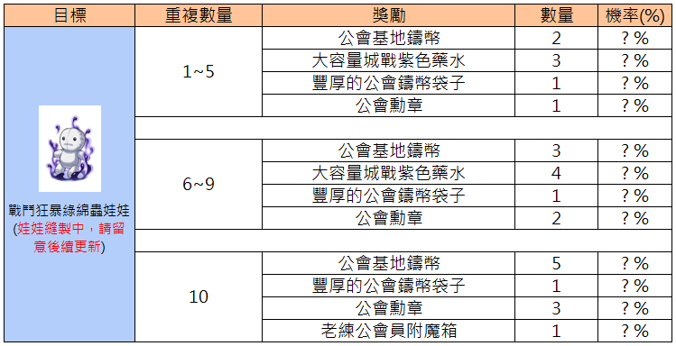
Diese Tabelle zeigt die Belohnungen, die basierend auf der Anzahl der Wiederholungen für die Battle Frenzy Green Pupa Doll gewährt werden.
| Ziel | Wiederholungsanzahl | Belohnung | Menge | Wahrscheinlichkeit (%) |
|---|---|---|---|---|
| Battle Frenzy Green Pupa Doll (Doll being crafted, please stay tuned for updates) | 1~5 | Guild Base Coin | 2 | ? % |
| Battle Frenzy Green Pupa Doll (Doll being crafted, please stay tuned for updates) | 1~5 | Large Capacity WoE Purple Potion | 3 | ? % |
| Battle Frenzy Green Pupa Doll (Doll being crafted, please stay tuned for updates) | 1~5 | Rich Guild Coin Pouch | 1 | ? % |
| Battle Frenzy Green Pupa Doll (Doll being crafted, please stay tuned for updates) | 1~5 | Guild Emblem | 1 | ? % |
| Battle Frenzy Green Pupa Doll (Doll being crafted, please stay tuned for updates) | 6~9 | Guild Base Coin | 3 | ? % |
| Battle Frenzy Green Pupa Doll (Doll being crafted, please stay tuned for updates) | 6~9 | Large Capacity WoE Purple Potion | 4 | ? % |
| Battle Frenzy Green Pupa Doll (Doll being crafted, please stay tuned for updates) | 6~9 | Rich Guild Coin Pouch | 1 | ? % |
| Battle Frenzy Green Pupa Doll (Doll being crafted, please stay tuned for updates) | 6~9 | Guild Emblem | 2 | ? % |
| Battle Frenzy Green Pupa Doll (Doll being crafted, please stay tuned for updates) | 10 | Guild Base Coin | 5 | ? % |
| Battle Frenzy Green Pupa Doll (Doll being crafted, please stay tuned for updates) | 10 | Rich Guild Coin Pouch | 1 | ? % |
| Battle Frenzy Green Pupa Doll (Doll being crafted, please stay tuned for updates) | 10 | Guild Emblem | 3 | ? % |
| Battle Frenzy Green Pupa Doll (Doll being crafted, please stay tuned for updates) | 10 | Veteran Guild Member Enchantment Box | 1 | ? % |
Die Spalte für die Wahrscheinlichkeit zeigt derzeit keine spezifischen Werte an (?%).
💡 Praxis-Tipps
- Inventar-Platz: 30 Puppen kosten Inventarslots — ggf. Storage-Management einplanen
- Drop-Routen planen: Jede Puppe hat eigene Spawn-Zones — Discord/Wiki für aktuelle Drop-Hotspots nutzen
- Kombi mit Fever/Leveln: Viele Puppen droppen in Fever Mapsn auf dem Weg nebenbei